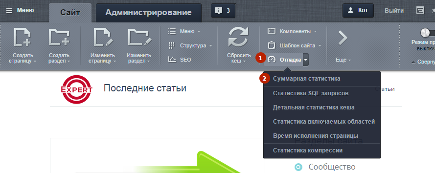
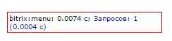
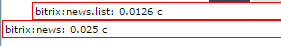
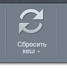
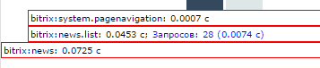
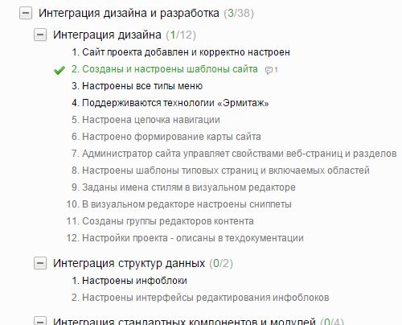
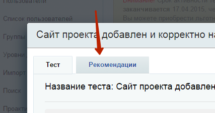
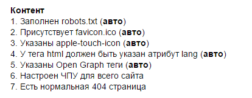

29 Мар 2015
В статье будет рассмотрена значительная часть способов проверки качества: что-то может сделать менеджер, не подгружаясь в программный код, а для некоторых проверок нужен технически подкованный специалист с большим опытом. Очень важно не доверять проверку качества посторонним людям, а потратить время и научиться делать её самостоятельно. Ведь в конечном итоге, лучший способ сэкономить - это поручить работу тем людям, которые умеют делать действительно качественный продукт.
Как показывает практика, очень важно научиться отслеживать корректность работы механизма кэширования.
Механизм кэширования в Битрикс - один из основных. Без него система превращается в страшного неповоротливого монстра, генерирующего страницы по 2-3 секунды, что некорректно. Плохие разработчики часто врут, оправдывая своё незнание этого механизма. Не будьте чересчур доверчивы. Ниже мы расскажем, как проверять работу за разработчиками.
Мы расскажем, как используя визуальные инструменты 1С-Битрикс проверить работу механизма кэширования на сайте.
Войдите на сайт как администратор и включите отображение статистики:
На странице появятся вот такие блоки, показывающие статистику работы каждого компонента
При правильно настроенном кэшировании число запросов при повторной загрузке страницы должно равняться НУЛЮ:
При этом, если нажать на кнопку "Сбросить кэш"
То запросы в статистике снова появятся
Итак, ещё раз:
зайдите под административным аккаунтом, включите отображение статистики и убедитесь, что при повторной загрузке той же страницы запросов к серверу не делается.
Наличие Ajax-механик на странице не является оправданием неработающему механизму кэширования. Все вышеописанные действия должны быть выполнимы.
Честное прохождение стандартного монитора качества занимает порядка 4-5 часов, но содержит действительно хорошие проверки и инструкции.
Монитор качества содержит порядка 66 тестов, из которых только порядка 10 будут для Вас неактуальны.
Часть тестов проходится автоматически, а часть придётся произвести вручную.
Особенно ценно наличие вкладки "рекомендации" у каждого из тестов
Честно пройти тест будет полезно даже опытному разработчику. Что уж говорить про того, кто недавно начал покорять тонкости системы.
На прохождение мастера у Вас уйдёт от 1,5 до 5 часов, на даже опытный разработчик найдёт в нём полезные для себя аспекты.
http://marketplace.1c-bitrix.ru/solutions/articul.checklist/
Модуль содержит специфический, но полезный набор тестов.
Возможно, Вы не используете в качестве репозитория GitHub/Bitbucket, как это делает Артикул, но обратите внимание хотя бы на их тесты для контента, они стоят того:
Кстати, исходные коды решения выложены на BitBucket, так что Вы можете легко модифицировать и использовать их!
Написать свои тесты намного проще, чем кажется. Этому посвящена глава в курсах Битрикс, и сложность скорее заключается в том, чтобы найти идеи для тестов, достаточно технологичные для исполнения, и достаточно полезные, чтобы за них имело смысл браться.
Мы составили для Вас список идей, которые могут Вам пригодиться.
1 - Проверка наличия в .parameters.php всех переменных шаблона - если это условие не выполняется, контент-менеджер может случайно стереть часть необходимых настроек с страница сайта сломается. Базовая проверка легко осуществляется проверкой с помощью регулярного выражения всех файлов компонента.
2 - Наличие лишних шаблонов компонентов - если это условие не выполняется, то в проекте разрастается куча дублей, и архивных папок. Поддерживать такой проект очень трудно. У автора статьи есть заготовки, не обёрнутые в автотест, свяжитесь, если захотите реализовать эту идею.
3 - Отсутствие незакомментированного вывода ошибок - если это условие не выполняется, на каких-то страницах будет выводится отладочная информация, что не есть хорошо.
4 - Оценка уникальности контента (в %) и поиск полных дублей.
5 - Дубли тегов. Очень частая ошибка, возникающая из-за несоблюдения РеГиСтРа написания букв в тегах. Очень легко проверяется и сводится на нет, а с небольшим усложнением логики позволяет решать и более сложные проблемы (пробелы, апострофы и т.п.)
6 - Поиск битых ссылок и картинок
7 - Проверки, связанные с требованиями по переходу проекта между отделами компании (проверка правил вёрстки, размещения файлов, наличия определённых настроек и т.п.) - удобно для упрощения перехода проекта из отдела в отдел.
Юнит-тестирование не нужно при сборке сайтов.
Но оно может пригодится при разработке типовых решений и модулей на D7 (в том числе модулей для Битрикс-24)
Если это интересно Вам, прочитайте статью на Хабре.
Большинство ошибок джуниоров типичны, например:
- не обнулённые переменные
- не обработанные ошибки, например, если производится поиск элемента/элементов по условиям, но не рассматривается ситуация, когда элементы не найдены.
- отсутствие обработки входных данных - очень нудное, но крайне необходимое, когда речь, например, заходит о взаимодействии двух систем
- не учтённые XSS, SQL уязвимости
- компоненты не на классах
- отсутствие phpDoc в самописных компонентах
- некорректно размещённые шаблоны компонентов. Не все возможные способы размещения одинаково корректны и удобны для эксплутации
- нечитаемый, непонятный код (такой, как в старых компонентах и модулях Битрикс ;) ). Вопреки распространённому заблуждению, код должен писаться для людей, а не для машин.
К сожалению, не существует никакого способа борьбы с ними, кроме регулярного код-ревью и личного общения с разработчиками, которые эти ошибки допускают. Но есть и хорошие новости: в среднем джуниор перестаёт делать грубые ошибки через 2-3 месяца регулярного код-ревью и воспитания.